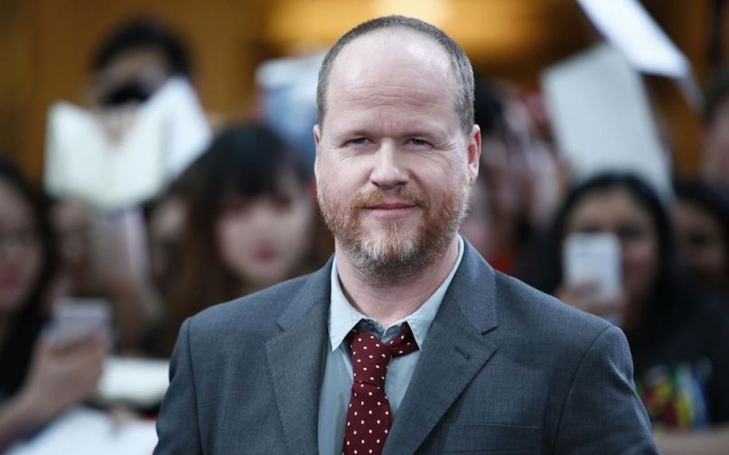
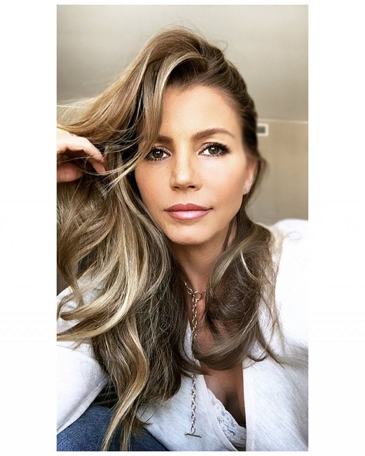
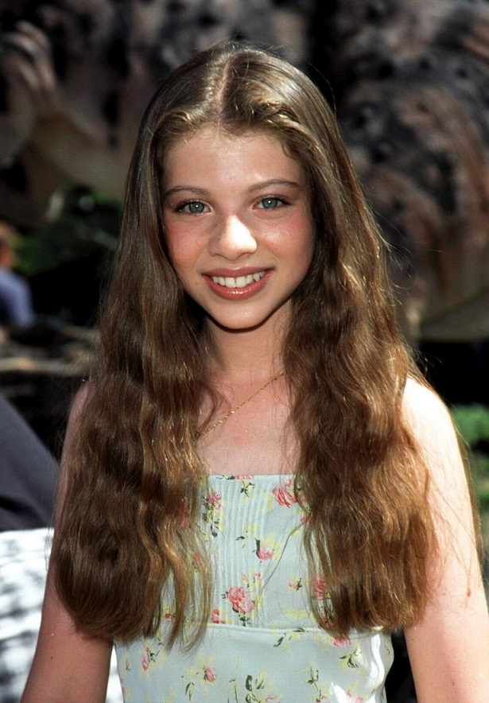
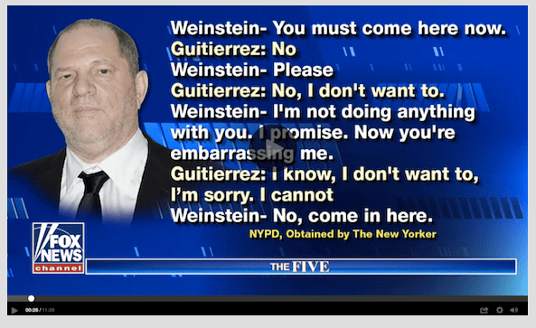
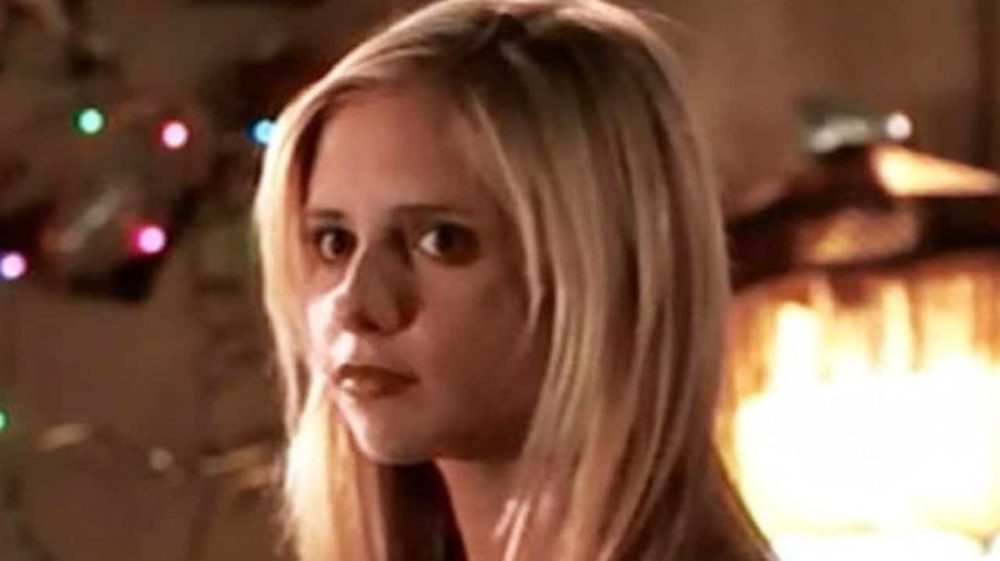

Joss Whedon is a Creep
February 22nd, 2021
Joss "Can I sniff your hair?" Whedon
How shocked are you that a guy who looks like that is a creepy sexual harrasser of wahmen? Because for me it's about a 0/10. I think I would have given about 70% odds that Joss Whedon would have a woman come forwards and accuse him of being a creeper. And as it turns out, we have two! Possibly more!
Charisma Carpenter
Charisma Carpenter's Instagram:
TDC_ARTICLE_START
For nearly two decades, I have held my tongue and even made excuses for certain events that traumatize me to this day.
Joss Whedon abused his power on numerous occassions while working together on the sets of Buffy the Vampire Slayer and Angel. While he found his misconduct amusing, it only served to intensify my performance anxiety, disempower me, and alienate me from my peers. The disturbing incidents triggered a chronic physical condition from which I still suffer. It is with a beating, heavy heart that I say I coped in isolation and, at times, destructively.
Last summer, when Ray Fisher publicly accused Joss of abusive and unprofessional behaviour toward the cast and crew during reshoots on the Justice League set in 2018, it gutted me. Joss has a history of being casually cruel. He has created hostile and toxic work environments since his early career. I know because I experienced it first-hand. Repeatedly.
Like his ongoing, passive-aggressive threats to fire me, which wreaks havoc on a young actor's self-esteem. And callously calling me "fat" to colleagues when I was 4 months pregnant, weighing 126 lbs. He was mean and biting, disparaging about others openly, and often played favourites, pitting people against one another to compete and vie for his attention and approval.
He called me in for a sit-down meeting to interrogate and berate me regarding a rosary tattoo I got to help me feel more spiritually grounded in an increasingly volatile work climate that affected me physically.
Joss intentionally refused multiple calls from my agents making it impossible to connect with him to tell him the news that I was pregnant. Finally, once Joss was apprised of the situation, he requested a meeting with me. In that closed-door meeting, he asked me if I was "going to keep it" and manipulatively weaponized my womanhood and faith against me. He proceeded to attack my character, mock my religious beliefs, accuse me of sabotaging the show, and then unceremoniously fired me the following season once I gave birth.
At six months pregnant, I was asked to report to work at 1:00 AM after my doctor recommended shortening my work hours. Due to long and physically demanding days and the emotional stress of having to defend my needs as a working pregnant woman, I began to experience Braxton Hicks contractions. It was clear to me the 1:00 AM call was retaliatory.
Back then, I felt powerless and alone. With no other option, I swallowed the mistreatment and carried on. After all, I had a baby on the way, and I was the primary breadwinner of my growing family. Unfortunately, all this was happening during one of the most wonderful time in new motherhood. All that promise and joy sucked right out. And Joss was the vampire.
Despite the harassment, a part of me still sought his validation. I made excuses for his behaviour, and repressed my own pain. I have even stated publicly at conventions that I'd work with him again. Only recently, after years of therapy and a wake up call from the Time's Up movement, do I understand the complexities of this demoralized thinking. It is impossible to understand the psyche without enduring the abuse. Our society and industry villify the victims and glorify the abusers for their accomplishments. The onus is on the abused with an expectation to accept and adapt to be employable. No accountability on the transgressor who sails on unscathed. Unrepentant. Remorseless.
These memories and more have weighed on my soul like bricks for nearly half of my life. I wish I said something sooner. I wish I had the composure and courage all those years ago. But I muted myself in shame and conditioned silence.
With tears welling, I feel an overwhelming sense of responsibility to Ray and others for remaining private about my experience with Joss and the suffereing it has caused me. It is abundantly evident that Joss has persisted in his harmful actions, continuing to create wreckage in his wake. My hope now, by finally coming forward about those experiences, is to create space for the healing of others who I know have experienced similar serialized abuses of power.
Recently, I participated in WarnerMedia's Justice League investigation because I believe Ray to be a person of integrity who is telling the truth. His firing as Cyborg in The Flash was the last straw for me. Although I am not shocked, I am deeply pained by it. It troubles and saddens me that in 2021 professionals STILL have to choose between whistleblowing in the workplace and job security.
It has taken me so long to muster the courage to make this statement publicly. The gravity of it is not lost on me. As a single mother whose family's livelihood is dependent on my craft, I'm scared. Despite my fear about its impact on my future, I can no longer remain silent. This is overdue and necessary. It is time.
TDC_ARTICLE_STOP
TL:DR Joss Whedon is an asshole, a creep, and specifically he tried to get a pregnant woman to murder her child, and retaliated against her when she refused.
After Carpenter spoke up, others followed. Michelle Trachtenberg spoke out against Joss Whedon as well.
Michelle Trachtenberg
TDC_ARTICLE_START
This must be known. As a teenager, with his not appropriate behavior….very. Not. Appropriate. There was a rule. Saying, he’s not allowed in a room alone with Michelle again.
TDC_ARTICLE_STOP
Keep in mind, Michelle was 15 when she joined Buffy. 15. And notice the "again," at the end of her statement.
Winter is Coming:
TDC_ARTICLE_START
It brings to mind a scandal that Whedon mostly weathered back in 2017, when his ex-wife Kai Role wrote an article in TheWrap detailing Whedon’s numerous infidelities and saying that he “used his relationship with me as a shield, both during and after our marriage, so no one would question his relationships with other women or scrutinize his writing as anything other than feminist.”
TDC_ARTICLE_STOP
Pictured: World's most famous feminist
Yeah really shocking that this creep was a feminist. Just a level of shock that shouldn't even be possible.
I personally think he's creepier in motion. There's some combination of that skinny fat body, the large potato head, the beady little eyes, on top of his weird affectation that sets my "don't let my sisters around this dude," -dar off. But what pushed me over the edge was his shitlibby feminist politics. Male feminists are weird people, and their individual pathologies vary, but creepy sexual harassment is abundant.
Sarah Michelle Gellar, "Buffy"
Sarah Michelle Gellar also came out with a statement indicating how disappointed she was to still be associated with Joss Whedon, and vaguely standing with victims of abuse. It's not specific enough, and I mostly just wanted to include that because I wanted to include a picture of Sarah "hottest jew ever?" Michelle Gellar. My first crush, and I don't mean jew crush, I mean crush period. At the age of 6 I didn't know what I was supposed to do with her, but I knew it involved holding her hand and being very nice to her.
Anyway, enjoy the confirmation bias as yet another male feminist turns out to be a creepy abuser of wahmen. Although I could have told you that by looking at his face for 0.1 seconds.